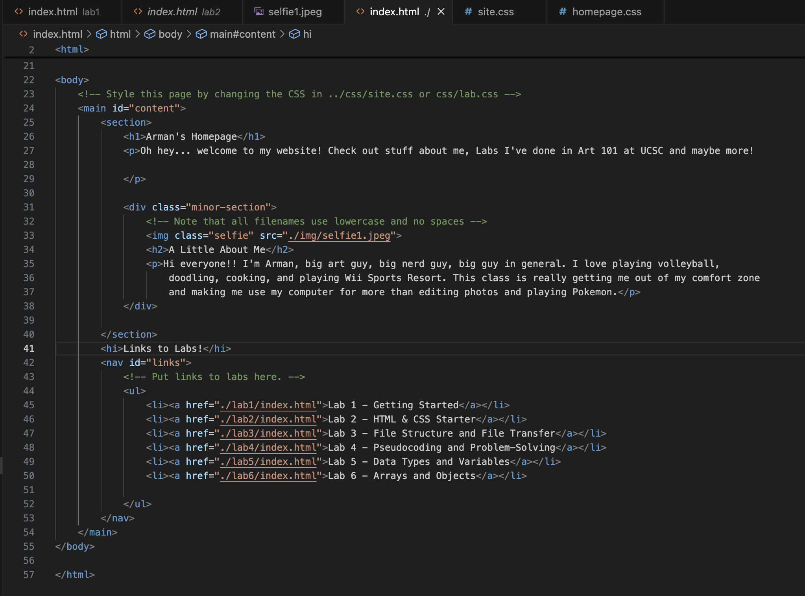

Lab 3 - File Structure and File Transfer
Challenge
The challenge of this lab was to create and organize a local file structure and add html files in a manner that is easy to navigate.
Problems
We did not encounter any major problems outside of Ben's Github having some strange popups that we had never encountered before. We were able to solve them by talking to Ilia and asking other peers with coding experience.
Reflection
We felt that this assignment was relatively straightforward and was more an organization focused assignment rather than a strictly coding based one. The effort we put in was mostly around going back and c hecking our work and making sure we didn't have any silly mistakes.
Results
The results we felt were pretty smooth, as you can see, the fruits of our labors involve this page and the functioning links and images it has. Below is a screenshot of the code for my homepage.
